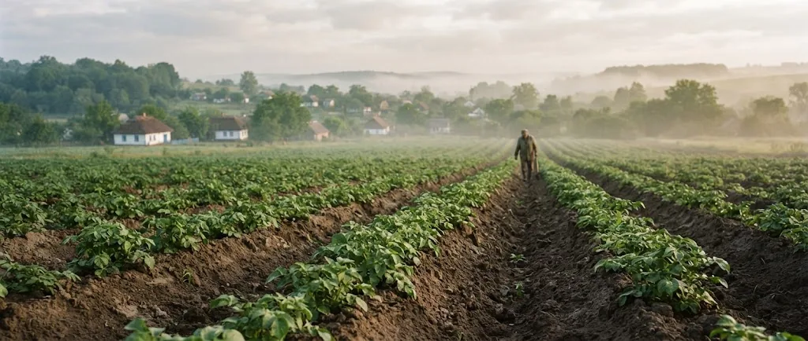
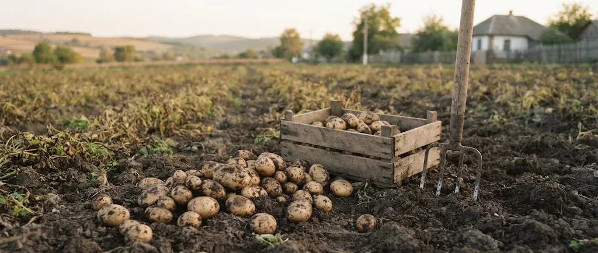
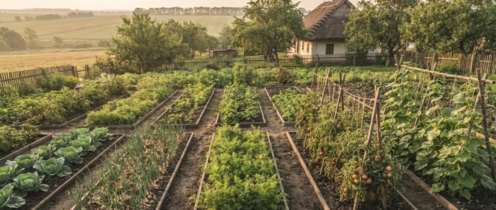
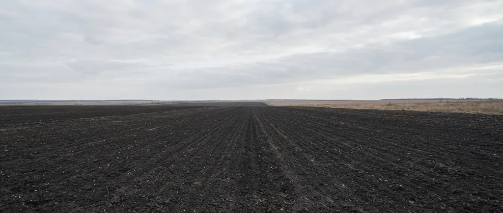

Практика агронома, технології GREENODIN, відновлення ґрунтів. Пише Тимур Лєвда, директор НВ ТОВ «СІНТА».
pH ґрунту визначає, чи засвоюють рослини фосфор, кальцій і мікроелементи, які ви вже внесли. Багато культур найкраще ростуть при 6,0–7,0; нижче 5,5 і вище 8,0 добрива працюють гірше.
Найточніше pH ґрунту показує цифровий pH-метр або лабораторний аналіз. Тест-набір дешевший, але дає лише орієнтир. Нижче: чим міряти, як брати пробу і як не помилитися.
Багато культур найкраще ростуть при pH 6,0–7,0. Картопля витримує кислішу землю, цукровий буряк і капуста віддають перевагу нейтральній, лохині потрібна кисла. Нижче таблиця по 18 культурах із джерелами.
Кислий ґрунт розкислюють вапняком, доломітовим борошном чи меліорантами, лужний підкислюють торфом, сіркою або спеціальними добривами. Дозу рахують за аналізом, вносять заздалегідь, результат перевіряють через рік.

Картопля любить пухкий дренований ґрунт з pH близько 6,0 і не терпить загущення. Нижче: відстані та глибина посадки, норми органічного добрива за роками, полив і збирання.

Основа захисту картоплі це профілактика: здоровий насіннєвий матеріал, сівозміна раз на чотири роки, правильний полив і pH. Нижче розбір чотирьох головних хвороб та підсумок догляду після збирання.
Сівозміна це заздалегідь складений порядок, у якому культури й пари змінюють одне одного на кожному полі. У полтавському досліді пшениця після пшениці дала на 28–34,5% менше зерна, ніж після гороху, еспарцету чи пару.
Сівозміна замінює «одну культуру щороку» на схему, де кожне поле має свою послідовність культур і парів. Вона знижує накопичення хвороб, шкідників і бур’янів та вирівнює навантаження на ґрунт.
Найкращі попередники озимої пшениці це пар, багаторічні трави й зернобобові. Нижче таблиця по основних польових культурах із мінімальними строками повернення за постановою КМУ № 164 і цифрами з польових дослідів.

Овочі чергують не за видами, а за родинами: споріднені культури ділять хвороби. Нижче таблиця попередників для капусти, огірків, помідорів, моркви, буряку й гороху та приклад п’ятирічної схеми для городу.

Чорний пар накопичує вологу, ранній захищає від ерозії, зайнятий дає корм чи зелене добриво. У полтавському досліді запас вологи після чорного пару становив 250,9 мм проти 197,7 мм після пшениці.
Схему сівозміни складають у вісім кроків: від поділу землі на поля до ротаційної таблиці й книги історії полів. Нижче приклад п’ятипільної ротації для Лісостепу з перевіркою за постановою КМУ № 164.